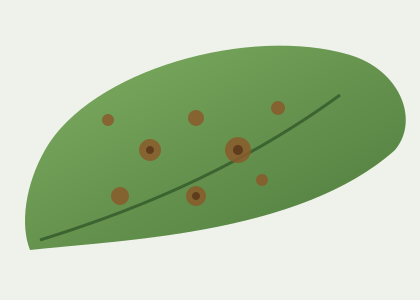

Сфотографируйте лист
Снимок уходит в очередь на диагностику: распознавание растения, диагноз и сверка назначения со справочником препаратов.

tomato-leaf-septoria.jpg · 1.8 МБ
Что известно
- Задача
- в работе взята в очередь
- Растение
- томат (предположительно)
- Куда ушло
- AI-воркер, модель
vision-diagnosis - Когда будет
- обычно 10–30 секунд
Что понадобится для точного диагноза
Прототип интерфейса: на этом шаге собираем вход, дальше — результат.
- Снимок
- лист целиком, при дневном свете, без теней
- Растение
- достаточно назвать вид или выбрать из списка
- Симптомы
- необязательно: пятна, налёт, увядание, следы насекомых
- Контекст
- теплица или открытый грунт, как часто поливаете